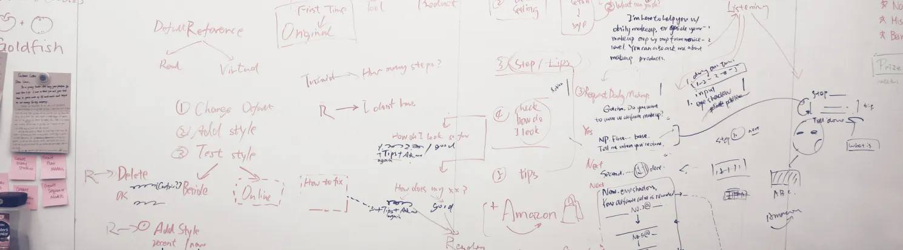
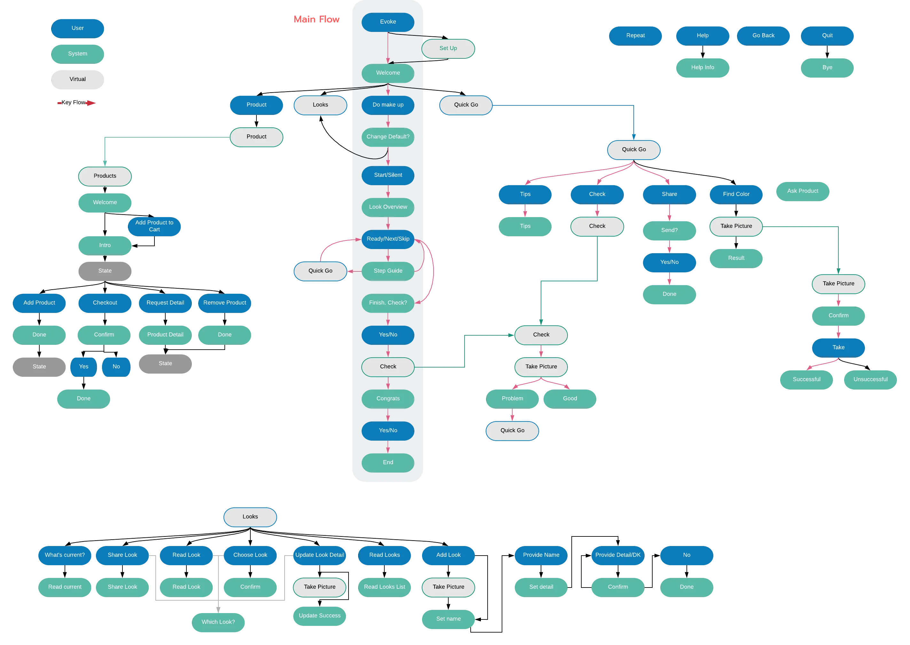
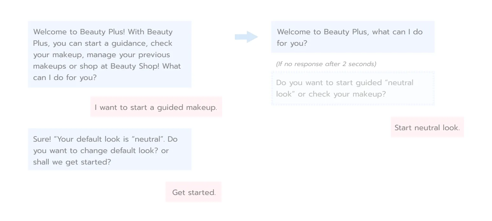

Bring makeup-independence to the visually impaired
To better empathize with the user, we tried applying makeups with our eyes closed. Things we found the hardest are:
1. Knowing how much of the product is poured out.We interviewed three people with different types of visual impairments (including blindness). We observed them doing their daily makeup routine, and learned:
1. Unlike us, our users have no trouble knowing how much product is poured out or where the tip of the pen/brush is, they also know their faces very well that they can apply product at the exact area they want.
2. The No. 1 thing that even experienced users still need everyday from another person is to check if there is no stains etc.
3. Certain type of product containers/tools are easier to use than others
4. Users often prefer more neutral look because they can't easily check the face during the day, and neutral colors are less likely to be messed up after different activities. Another reason some mentioned is that she doesn't want to draw attention on the eyes because of the uncontrollable eye movement.
For prototyping the conversational UI, we started with a whiteboard, markers, and post-its, and then digitized them as a flow of intents with Tortu and Lucid Chart. We broke down the flow into several parts and designed anchors to link them. After finalizing the flow, we wrote example utterances with slots for each intent.
 We iterated the dialogues with multiple rounds of "Wizard-of-Oz" testing. The main iterating direction is to shorten the responses and make sure we don't provide more than 2 options at a time because user can only process and remember so much through hearing.
